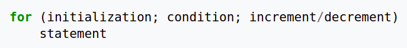
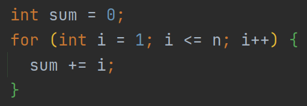
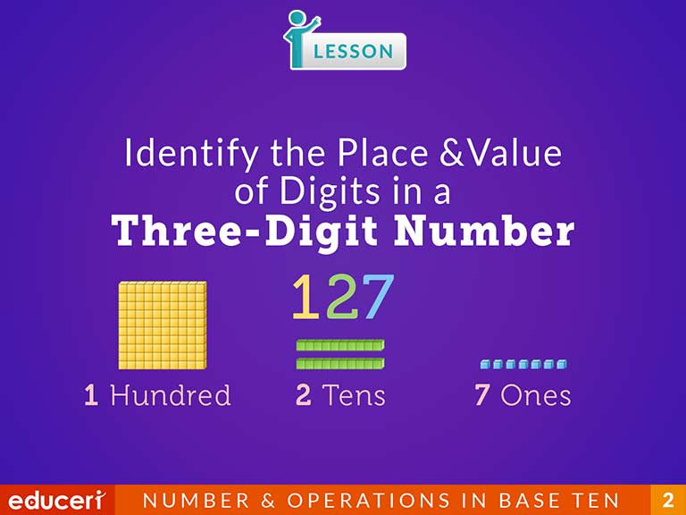
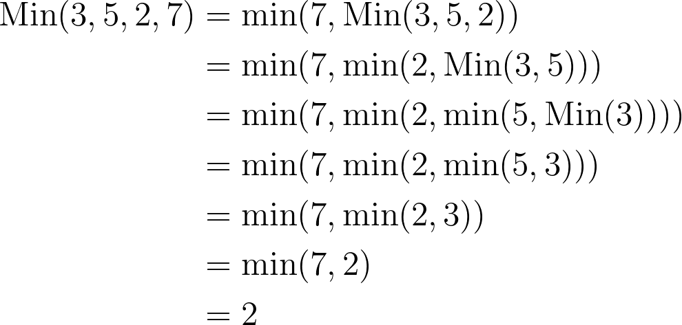
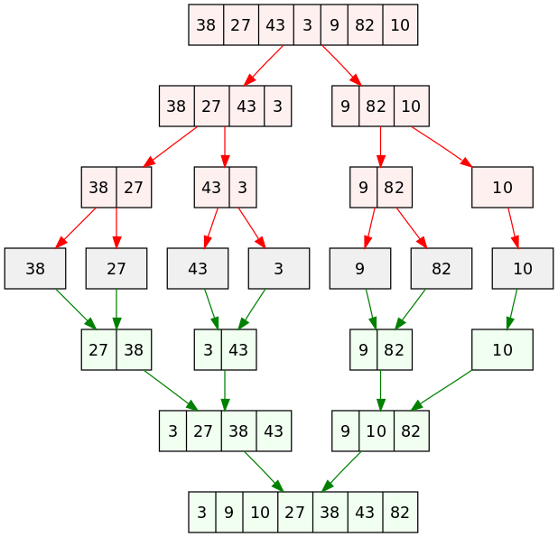
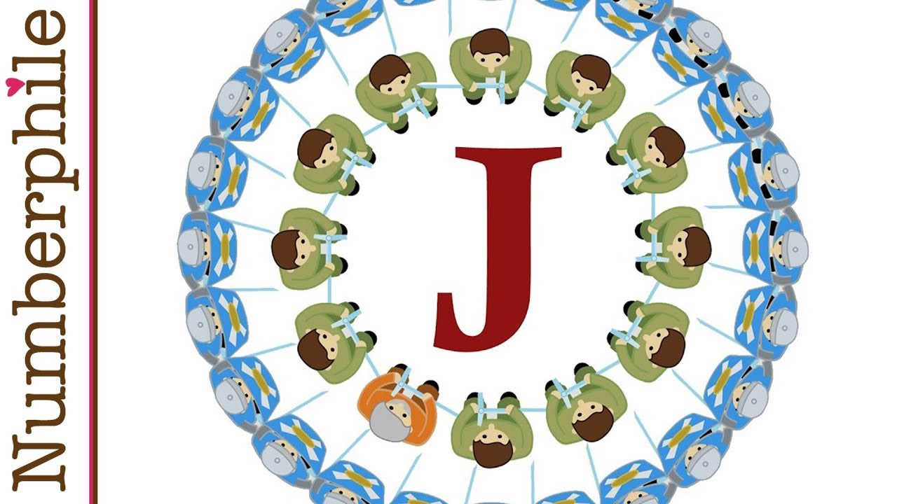

Introducing C
Hengfeng Wei (魏恒峰)
hfwei@nju.edu.cn

Sep. 27, 2021
Questionnaire

$75\%$ of students are new to programming.
To C Beginners

From Beginners to Masters
Programming
De-programming
What is C?
C is a computer programming language (PL).
You communicate your ideas to computers via PLs.
What is C?
Programming is NOT (only) about languages.
Programming is not about C.
You learn C to express YOUR IDEAS.
How to Learn (1)?

How to Learn (2)?

"无他, 但手熟尔"
How to Learn (3)?
How many bugs have you ever produced?
C Programming:
A Modern Approach


C Primer Plus

K&R C Bible


K&R
Brian W. Kernighan (1942 ~)

Dennis M. Ritchie (1941 ~ 2011)
Examination and Scores
-
考勤 -
期中测试 -
期末笔试 - 期末机试 (30 分)
- 编程练习 (70 分)
- 奖励
编程练习: 每周基础训练 (40 分) + 学期项目 (30 分; 2 个)
Q&A


CLion

"你有你的选择, 而我选择 CLion"
Hello World (K&R C)

Hello World (Standard C)
Brief History of C

You do not have to become a language lawyer.
Brief History of C

Turing Award (1983)
Game: Guess the Number

Game: Guess the Number

You think. I will type it for you.
How to Obtain a Random Number?
How to Obtain a Random Number?

How to Obtain a Random Number?
$s \qquad f(s) \qquad f(f(s)) \qquad \ldots$
pseudo-random number sequence
How to Obtain a Random Number?

Code Style

Braces
Tabs vs. Spaces
Programming Style Guide

Secure C


How to Obtain a Random Number (Revisited)?

What is Next?
- Variables and Types (
int,double) - Math: computer arithmetic
- Input/Ouput (I/O)
- Branching: "if/else", "switch/case"
- Looping: "while", "do/while", "for"
- Jumps: "break", "continue", "goto"
- Functions & Libraries
Keeping Programming
No Plagiarism!!!
前两次各扣 10 分, 第三次总分降为 60 分 $\;(\times\; 60\%)$
Resources

6735 99232 2021-C-PL
Resources

发布课件、资料、调查问卷等
Resources

Variables, Types, IO
Hengfeng Wei
hfwei@nju.edu.cn

Oct. 11, 2021
Overview
Variables (变量) Constants (常量)
Data Types (数据类型)
Operators (运算符) Expressions (表达式)
Assignment Statements (赋值语句)
I/O (Input/Output; 输入输出)
"Talk is Cheap. Show me the Code."
circle.c sphere.c mol.c admin.c
Circle
Given a radius ($10$) of a circle,
to compute its circumference and area.
$L = 2\pi r$ $S = \pi r^2$
- 每个结果各占一行
- 小数点后保留两位
Declaration (声明)
int radius = 10;
- Introduce a variable called
radius. - You can use
radiuslater. - The type of
radiusisint(integer). radiusis initialized (初始化) to10.- You can assign (赋值) other values to
radius. radiusrefers to a location (&radius) in memory.
Definition (定义)
int radius = 10; is also a definition.
Any definitions are declarations.
All declarations are definitions (at least for now).
Identifiers (标识符)
int radius = 10;
The name radius is an identifier.
- made up of letters, numbers, and underscores
- do not start with a number
Identifiers
- Use meaningful identifiers
surface_areavs.surfaceArea
Operators and Expressions
double circumference = 2 * PI * radius;
Assignment Statements
double circumference = 0;
circumference = 2 * PI * radius;
Sphere
Given a radius ($100$) of a sphere,
to compute its surface area and volume.
$A = 4 \pi r^2$ $V = \frac{4}{3} \pi r^3$
- 每个结果各占一行
- 小数点后保留四位
- 每个结果至少占$15$字符, 左对齐
_______________ : surface_area_______________ : volume
mol
$6$ 克氧气的物质的量是多少?
$Q = 6 / 32 \times 6.02 \times 10^{23}$
两种格式输出, 结果均使用科学计数法表示
- 第一行结果, 小数点后保留三位
- 第二行结果, 保留五位有效数字
Data Types
int($\approx \mathbb{Z}$)double($\approx \mathbb{R}$)char(Character; 字符)C string(char array; 字符数组)
int $\approx \mathbb{Z}$
INT_MIN INT_MAX
printf("INT_MIN = %d \t INT_MAX = %d\n", INT_MIN, INT_MAX);
A (Naive) Administration System
- Name (EN)
- Gender (F/M)
- Birthday (mm-dd-yyyy)
- Weekday (Xyz.)
- C
- Music
- Medicine
- Mean (.d)
- Standard Deviation (.dd)
- Ranking ($\%$)
A (Naive) Administration System
- 每组信息占一行
- 各项信息使用 "TAB" 间隔
- 各项信息要遵循特定格式要求
罗大佑

Data Types: char

isdigit isalpha isalnumislower isupper tolower toupperisspace(including, \n, \t)
Data Types: C string
char first_name[] = "Tayu";
A C string is an array of characters.
'\0': terminating null character
'T', 'a', 'y', 'u', '\0'
char first_name[5] = "Tayu";
char first_name[10] = "Tayu";
char first_name[2] = "Tayu";
printf
int printf(const char *format, ...);format: format string (格式串)...: variable argument list (可变长参数列表)
printf
int printf(const char *format, ...);The format string consists of
- ordinary characters (not %)
- conversion specifications (转换说明)
- each of which is introduced by %
printf
int printf(const char *format, ...);
Escape sequence (转义序列)
\n: Newline\t: Horizontal Tab\": Double quotation mark\': Single quotation mark\\: Backslash\b: Backspace
printf
int printf(const char *format, ...);| %specifier | Argument | Output |
|---|---|---|
| %d (%i) | int | decimal ([-]dddd) |
| %f | double | decimal ([-]ddd.ddd) |
| %e (%E) | double | decimal ([-]d.ddde[+-]dd) |
| %g (%G) | double | %f or %e |
printf
int printf(const char *format, ...);| %specifier | Argument | Output |
|---|---|---|
| %c | int | character |
| %s | pointer to a char array | string |
| %% | % |
printf
"It is up to you to ensure that
the type of the actual argument
matches the type expected by conversion specifiers."
printf
%[flags][width][.precision]specifier
int printf(const char *format, ...);flags-: left-justified (otherwise, right-justified)+: always begin with a plus or minus sign
printf
%[flags][width][.precision]specifier
int printf(const char *format, ...);width- minimum field width
- padded with spaces if it has fewer characters
printf
%[flags][width][.precision]specifier
int printf(const char *format, ...);- %d, %i: minimum number of digits
- expanded with leading zeros when needed
- %f, %e, %E: number of digits after '.'
- default is $6$
- %g, %G: maximum number of significant digits
- %s: maximum number of characters
scanf
int scanf(const char *format, ...);format: format string (格式串)...: variable argument list (可变长参数列表)
scanf
int scanf(const char *format, ...);The format string consists of
- white-space characters
- ordinary characters
- neither % nor white-spaces
- conversion specifications
- each of which is introduced by %
scanf
int scanf(const char *format, ...);- Scan the input stream from left to right
- Identify expected items as long as possible
scanf
int scanf(const char *format, ...);| %specifier | Matched Item | Argument |
|---|---|---|
| %d | skip white-spaces; matches an int |
pointer to int |
| %le, %lf, %lg | skip white-spaces; matches a double |
pointer to double |
| %e, %f, %g | skip white-spaces; matches a float |
pointer to float |
scanf
| %specifier | Matched Item | Argument |
|---|---|---|
| %c | a character | pointer to a char |
| %s | a sequence of non-white-spaces | pointer to a char array |
| %[abc] | scanlist | pointer to a char array |
| %[^abc] | not in scanlist | pointer to a char array |
| %% | % |
scanf
%[$\star$][width]specifier
int scanf(const char *format, ...);- $\star$: assignment-suppressing
- width: maximum field width
scanf
"It is up to you to ensure that
the type of each actual argument pointer
matches the type expected by conversion specifiers."
References
printf @ cppreference
scanf @ cppreference
References
Do not use scanf.
Use $\dots$ instead.
If, For, Array
Hengfeng Wei
hfwei@nju.edu.cn

Oct. 18, 2021
Review
Variables Constants Data Types
Operators Expressions Assignment Statements
I/O (Input/Output)
Constants
int:42double:3.14char:'c'string:"Hello World"
Literal constants (字面常量)
const double PI = 3.14159;
PI is still a variable.
Overview
If Statement (If 语句)
For Statement (For 语句)
Logical Expressions (逻辑表达式)
Array (数组)
"Talk is Cheap. Show me the Code."

min leap
sum.c min.c
Min

Min of Two
Given two integers $a$ and $b$,
to compute their minimum.
$\mathit{min} = \min\{a, b\}$
if
The else part is optional.
if
Multiple declarations and statements surrounded by {}
Always Use {}!
Relational Operators (关系运算符)

>=<=><==(equal to)!=(not equal to)
Relational Expressions (关系表达式)
Relational expressions have values 0 (false) or 1 (true).
In C, non-zero numbers are treated as 1 (true).
?:
min = a >= b ? b : a;
Conditional Expression (条件表达式)
Ternary Operator (三目运算符)
Do Not Use it Too Much!
Min of Three
Given three integers $a$, $b$, and $c$,
to compute their minimum.
$\mathit{min} = \min\{a, b, c\}$
Nested if
Min of a Set of Numbers
Given a set $A$ of integers,
to compute their minimum.
$\mathit{min} = \min A$

Leap Year

Leap Year (1): Nested if

Leap Year (2): Nested if

Leap Year (3): else-if
Leap Year (4): The Ultimate Version
A year is a leap year if
- it is divisible by 4 but not by 100,
- except that years divisible by 400 are leap years.
Logical Operators (逻辑运算符)

Logical Expressions (逻辑表达式)
Logical expressions have values 0 (false) or 1 (true).
Short-circuit Evaluation
year = 25year = 80
Sum
Given an integer $n \ge 0$, to compute $\sum\limits_{i = 1}^{n} i$.
Increment/Decrement Operators (++, --)
i++- increment
iafter its value has been used
- increment
++i- increment
ibefore its value is used
- increment
Increment/Decrement Operators (++, --)
i = 2;
j = i * i++;
Undefined Behavior (未定义行为)
For Statement



Min of a Set of Numbers
Given a set $A$ of integers,
to compute their minimum.
$\mathit{min} = \min A$
#define NUM 5
Symbolic Constants (符号常量)
#define is a pre-processing directive (预处理指令).
int numbers[NUM] = {0}; has a constant size.
NUMis known at compiler time.
Array Initializer
int numbers[NUM] = {0};
int numbers[NUM] = {1};{1, 0, 0, 0, 0}
int numbers[] = {0};{0}
int numbers[NUM] = {[2] = 1};{0, 0, 1, 0, 0}- See Section 8.1.3
Array Initializer
int numbers[NUM] = {0};
int numbers[NUM] = {};- Forbidden in
C99(Unfortunately) - Allowed by GCC by default (Unfortunately)
- Forbidden in
int numbers[NUM];- May contain garbage values
int numbers[];- You must specify the size so that the compiler can allocate memory for it.
Array Members
[]: subscript operator (下标运算符)
For a While
Hengfeng Wei
hfwei@nju.edu.cn

Oct. 25, 2021
Review
If Statement
For Statement
Logical Expressions
Array
Overview
For Statement (More Examples)
While (Do-While) Statement
break Statement
"Talk is Cheap. Show me the Code."

Stars Pyramid
stars.c
Prime Numbers

prime.c primes.c
Selection Sort

selection-sort.c
Palindrome

palindrome.c
Binary Search

binary-search.c
Number of Digits

digits-while.c digits-do-while.c
Counting

counting-if.c counting-switch.c
Loops
Hengfeng Wei
hfwei@nju.edu.cn

Nov. 01, 2021
No Plagiarism!!!

No Plagiarism!!!
第一次作业抄袭现象触目惊心
助教们敦促蚂老师召开了紧急磋商会议
会上大家对作业进行了反思, 并制定了严厉的抄袭处罚措施
No Plagiarism!!!
- 当次作业计 $0$ 分
- 前两次抄袭总评各扣 $10$ 分
- 第三次抄袭总评直接判为不及格 $\;(\times\; 60\%)$
No Plagiarism!!!
助教与第一次作业(疑似)抄袭的同学进行了亲切友好的交谈
口头警告, 算作一次抄袭记录, 不作总评扣分处理
Review
For Statement (More Examples)
While (Do-While) Statement
break
Overview
Loops (More Examples)
Multidimensional Arrays (多维数组)
continue, goto
"Talk is Cheap. Show me the Code."

Merge

merge.c
Bubble Sort

bubble-sort.c
Conway's Game of Life
John Horton Conway ($1937 \sim 2020$)

Conway's Game of Life
- Any live cell with two or three live neighbours survives.
- All other live cells die in the next generation.
- Any dead cell with three live neighbours becomes a live cell.
- All other dead cells stay dead.
Conway's Game of Life
game-of-life.c
Counting
counting-if.c counting-switch.c
Jump Statements
break continue goto
common.c continue.c
Function
Hengfeng Wei
hfwei@nju.edu.cn

Nov. 08, 2021
Review
Loops (More Examples)
Multidimensional Arrays
Overview
Functions
"Talk is Cheap. Show me the Code."

Re-writing Programs using Functions
Recursion
Hengfeng Wei
hfwei@nju.edu.cn

Nov. 15, 2021
Review
Functions
- Function Declaration
- Function Definition
- Arrays as Parameters
- Pass by Value
Overview
Recursive Functions (Recursion)

A function that calls (调用) itself.
Recursion
Thinking Recursively

It is a looooooog way to go to master recursion!!!
Recursion: Systems Implementation
- Programs run in memory (内存; 記憶體).
- Memory = Stack (栈区) + Heap (堆区) + $\cdots$
- Each function call has its own stack frame (栈帧).
- Stack grows/shrinks with function calls and returns.
Recursion: Systems Implementation
Recursion: Mathematical Induction
- Base Case (基础情况)
- Inductive Step (归纳步骤)
"Talk is Cheap. Show me the Code."

Min

min-re.c
Sum
sum-re.c
Fibonacci Sequence
$0, 1, 1, 2, 3, 5, 8, 13, 21, 34, 55, 89, 144, \ldots$
- $F_{0} = 0$
- $F_{1} = 1$
- $F_{n} = F(n - 1) + F(n - 2) \qquad (n > 1)$
fib-re.c fib-array.c fib-iter.c
Greatest Common Divisor
- $a > b \implies \text{gcd}(a, b) = \text{gcd}(a - b, b)$
- $a < b \implies \text{gcd}(a, b) = \text{gcd}(a, b - a)$

gcd-euclid-re.c gcd-euclid-iter.c
Greatest Common Divisor
$\text{gcd}(a, b) = \text{gcd}(b, a \;\%\; b)$
gcd-euclidean-re.c gcd-euclidean-iter.c
Binary Search

bsearch-re.c
Recursion; Data Types
Hengfeng Wei
hfwei@nju.edu.cn

Nov. 22, 2021
Review
Recursion
A function that calls itself.
Recursion
Thinking Recursively
Overview
Recursion (More Examples)
Data Types
static
"Talk is Cheap. Show me the Code."

Binary Search

bsearch-re.c
Merge Sort

merge-sort.c
Data Types
The type of a variable determines
- the set of values it may take on and
- what operations can be performed on them.
int double char
Integral Types
Signed (有符号数)
short intintlonglong long
Unsigned (无符号数)
bool(stdbool.h)unsigned short intunsigned intunsigned longunsigned long long
char (unsigned/signed)
Overflow (溢出)
- 有符号整数运算中发生溢出, 程序的行为是未定义的。
- 无符号整数运算中发生溢出, 程序的行为是有定义的。
Integral Promotion (整型提升)
- 定义初始化
- 赋值操作
- 参数传递
- 函数返回值
Integral Promotion (整型提升)
"Arithmetic operators do not accept types smaller than int as arguments, and integral promotions are automatically applied."
Floating-point Numbers
float y = 5.0F%f%f
double x = 5.0%lf%f
long double z = 5.0L%Lf%Lf
Floating-point Numbers

Floating-point Arithmetic


"Floating-point Arithmetic is Hard."
Floating-point Arithmetic

float.h (Section 23.1)
Floating-point Arithmetic
- Overflow (上溢)
- Underflow (下溢)
- Significance Loss (精度丢失)
significance.c
Floating-point Arithmetic
"Many applications don't need floating-point arithmetic at all."

Use math.h (Section 23.3) whenever possible.
C 语言安全编码标准

整型数安全编码标准 (INT)
- 使用正确的整数类型
- 确保无符号整数运算不产生回绕
- 确保有符号整数运算不造成溢出
- 确保除法与余数运算不造成除0错误
- 确保整数转换不会造成数据丢失或者错误解释
浮点数安全编码标准 (FLP)
- 不要使用浮点数变量作为循环计数器
- 避免或者检测数学函数中的定义域与值域错误
- 确保浮点数转换在新类型的范围中
References
Pointers
Hengfeng Wei
hfwei@nju.edu.cn

Nov. 29, 2021
Overview

Pointers and Arrays Pointers and C Strings
Overview


Pointers
"A pointer is a variable that
contains the address of a variable."

"Talk is Cheap. Show me the Code."

Variables Revisited
int radius = 10;
radiusrefers to a location (&radius) in memory.
&: Address-of Operator ("取地址"运算符)
printf("%p\n", &radius);
Pointers
int *ptr_radius = &radius;
- The type of
ptr_radiusis "pointer to int".
Variables Revisited
double circumference = 2 * 3.14 * radius;
radius = 20;
A variable behaves as an lvalue or a rvalue.
左值 右值
Pointers
int *ptr_radius = &radius;
*ptr_radiusbehaves just likeradiusdoes.*: Indirection/Dereferencing ("间接寻址/解引用"运算符)
double circumference = 2 * 3.14 * (*ptr_radius);
*ptr_radius = 20;
Pointers
int *ptr_radius = &radius;
ptr_radiusis also a variable.
Swap Numbers

selection-sort.c
Min and Max
Compute both the min and the max
of an array of integers.
min-max.c
scanf.c
Dynamic Memory Management
int *numbers = malloc(len * sizeof *numbers);
void *malloc(size_t size);void free(void *ptr);selection-sort.c
Dynamic Memory Management

stdlib.h malloc.h
Pointers and Arrays
- The name of an array is a synonym for the address of its first element.
numbers[i]*(numbers + i)i[numbers]&numbers[i]numbers + i- But an array name is not a variable.
numbers++
Pointers and C Strings
char msg[20] = "Hello World!";
char *msg = "Hello World!";
strlen.c
strlen strlen_s
Pointers and C Strings
strcmp.c
strcmpstrncmp
Pointers and C Strings
strcpy.c
strcpy strcpy_sstrncpy strncpy_s
Return Pointers from Functions
Do not return pointers to
local variables in functions!!!
References

Chapter 14: string.h
Pointer Arrays
selection-sort-strings.c
Pointers (More)
Hengfeng Wei
hfwei@nju.edu.cn

Dec. 06, 2021
Review

Pointers and Arrays Pointers and C Strings
Overview
string.h
Pointer Arrays Pointers and 2D Arrays
Function Pointers
"Talk is Cheap. Show me the Code."

Pointers; Structures
Hengfeng Wei
hfwei@nju.edu.cn

Dec. 13, 2021
Review

string.h
Pointer Arrays Pointers and 2D Arrays
Overview
Program Arguments Function Pointer

struct union enum
"Talk is Cheap. Show me the Code."

Linked Lists
Hengfeng Wei
hfwei@nju.edu.cn

Dec. 20, 2021
Review and Overview
Program Arguments Function Pointer

struct union enum
Overview: Linked Lists

"Talk is Cheap. Show me the Code."
struct

musician.c
Linked Lists
Singly Linked List

Doubly Linked List
Linked Lists

Circular Linked List
Josephus Problem
